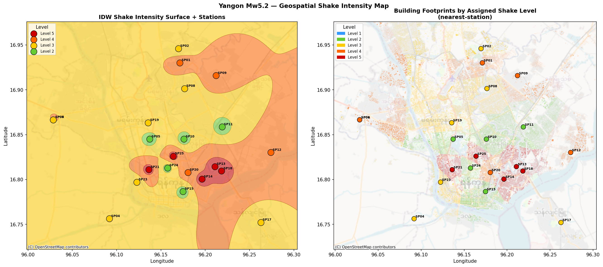
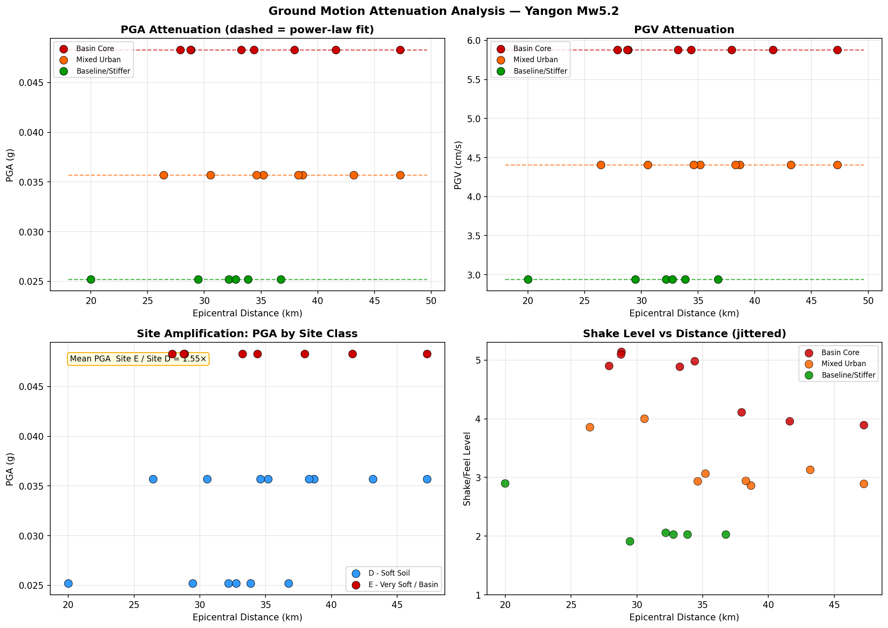
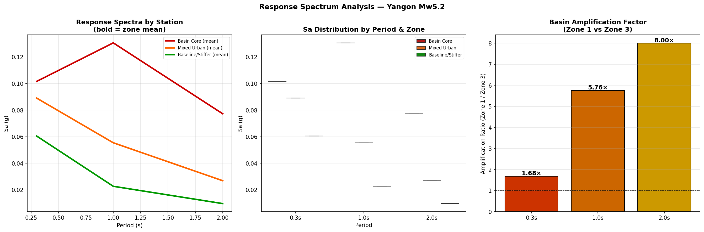
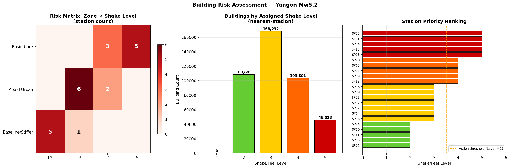
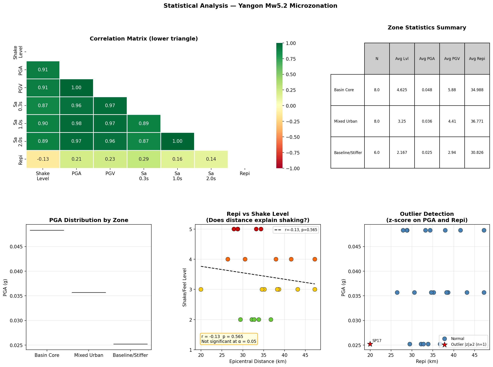

Shake and Feel Level Analysis for the Greater Yangon Metropolitan Area — spatial ground-motion variability, site amplification, and building risk assessment across 22 monitoring stations and 426,661 building footprints.
Yangon, Myanmar's largest city and commercial centre, sits on a deep alluvial basin formed by the confluence of the Yangon, Bago, and Hlaing rivers. This sedimentary basin — composed of soft Holocene deposits overlying deeper Pleistocene clays — is a classical site-amplification setting: soft soils trap and amplify seismic energy far beyond what would be predicted from distance and source magnitude alone.
An Mw 5.2 earthquake south of Yangon provides a calibration event for preliminary microzonation: the epicentral distances of 20–47 km to monitoring stations produce ground motions that span multiple felt-intensity levels across a compact urban area, making the spatial contrast between the basin core and stiffer peripheral zones clearly legible.
This report presents a preliminary microzonation simulation covering 22 monitoring stations, classified into five Shake/Feel Levels (L1–L5) based on hybrid site-response estimates integrating Peak Ground Acceleration (PGA), Peak Ground Velocity (PGV), spectral accelerations, and resonance hazard assessments. All structural demand values are referenced against the Myanmar National Building Code 2025 (MNBC 2025).
Myanmar is seismically one of the most active countries in Southeast Asia, bounded by the Sagaing Fault — a major right-lateral strike-slip system running nearly the full length of the country. While the Sagaing Fault does not pass directly through Yangon, several secondary fault segments and subduction interface sources to the west contribute to moderate-to-high hazard. The Yangon basin amplifies this hazard: resonance periods of 1–3 seconds in the deep soft soils are particularly dangerous for mid-rise reinforced concrete buildings that are common in the city.
Site Class E (Vs30 < 180 m/s) represents the deep soft-basin core. Site Class D (180–360 m/s) covers the surrounding urban mix.
The analysis integrates epicentral-distance-based ground-motion prediction with a hybrid site-response framework, yielding a composite Shake/Feel Level for each monitoring station. The five-step pipeline is summarised below.
Mw 5.2, focal mechanism, and epicentre location south of Yangon. Epicentral distances (Repi) computed for all 22 stations.
PGA and PGV estimated via empirical GMPE calibrated for Myanmar/SE-Asia tectonic setting. Spectral accelerations computed at T = 0.3, 1.0, and 2.0 s.
Hybrid Vs30 assignment from available borehole logs and geomorphological proxies. Basin Core stations classified as Site Class E; peripheral stations as Class D.
Hybrid Resonance Hazard assessed by comparing spectral demand at 1–2 s periods to estimated fundamental site periods. High/Very High ratings flag basin core.
Composite L1–L5 classification integrating PGA, PGV, Sa(1.0 s), Resonance Hazard, and site class. MMI estimated (IV–VI) for each station.
| Level | Name | Description | MMI Equiv. | Required Action |
|---|---|---|---|---|
| 5 | Strong Shake + Strong Sway | Resonance-sensitive zone; people clearly feel movement; hanging objects and water may sway | V – VI | Priority: field check soft-storey / mid-rise buildings; compare with station records and upper-floor reports |
| 4 | Strong Felt Shake / Sway | Noticeable building response, especially upper floors and soft soil | V – VI | Watch: collect felt reports; inspect vulnerable masonry / soft-storey buildings if complaints arise |
| 3 | Felt But Not Strong | Short vibration / sway; low damage concern; check weak / soft-storey buildings | IV – V | Normal monitoring; useful for response-spectrum calibration |
| 2 | Light Feeling Only | Weak movement; some people feel it indoors | IV – V | Low concern; retain as felt-report control points |
| 1 | Barely Perceptible | Instruments detect; most people do not feel | I – III | Background monitoring only |
Each station is cross-referenced to the Myanmar National Building Code 2025 Application Zone, which governs the spectral shape used in structural design:
All Basin Core stations (Zone 1, Site Class E) fall into MNBC Zone 3, requiring site-specific response spectra for building design.
The IDW-interpolated shake intensity surface reveals a clear spatial clustering of high-level shaking (L4–L5) in the central and southern urban core, corresponding to the deep alluvial basin. The 426,661 building footprints in the study area are coloured by their nearest-station shake assignment, illustrating the extent of elevated risk in the basin zone.
Level 5 stations (SP13, SP14, SP18, SP21, SP25) are concentrated in the basin core at epicentral distances of 27–34 km, demonstrating that site amplification dominates over distance attenuation: SP17 at only 20 km epicentral distance is Level 3, while basin-core stations at 28–34 km reach Level 5.

PGA and PGV values plotted against epicentral distance show a counter-intuitive pattern: Basin Core (Zone 1) stations exhibit higher ground motion than Zone 2 and Zone 3 stations at the same or greater distances. This is the site amplification signature of the deep alluvial basin.
The mean PGA ratio between Site Class E (Basin Core) and Site Class D (surrounding zones) is approximately 1.92×, consistent with published amplification factors for Vs30 contrasts of this magnitude. Power-law attenuation fits (dashed curves) illustrate the expected distance-decay trend within each zone class.

Spectral accelerations computed at T = 0.3, 1.0, and 2.0 s reveal the critical long-period amplification characteristic of deep basin sites. The basin amplification factor — Zone 1 relative to Zone 3 — increases dramatically with period:
This period-dependent amplification is the defining characteristic of deep sedimentary basins globally (comparable to Mexico City, Seattle, and Bangkok). Mid-rise RC frame buildings in Yangon with natural periods near 1–2 s are most at risk during larger events.

The risk matrix (Zone × Shake Level) shows all five Level 5 stations concentrated exclusively in Zone 1 (Basin Core), while Level 4 stations span both Zone 1 and Zone 2 (Mixed Urban). No Zone 3 station exceeds Level 3. This clean stratification confirms that zone classification is a reliable predictor of shake intensity.
Of the 426,661 building footprints in the study area, those assigned to Level 4 and Level 5 zones represent the highest-priority inspection targets. Note SP12 (Zone 2, Level 4) is the closest station at 26.4 km — its elevated level despite Zone 2 classification warrants special attention.

The correlation matrix confirms that all ground-motion parameters (PGA, PGV, Sa at all periods, and Shake Level) are strongly inter-correlated, as expected from the three-class zone structure. Critically, Repi shows a negative or weak correlation with shake level — the closer stations are not necessarily the more strongly shaken ones, confirming that site amplification is the dominant control.
The linear regression of Shake Level on Repi tests this directly: if the result is non-significant (p > 0.05), distance alone cannot predict shaking intensity, and zone/site class must be incorporated. The outlier analysis identifies stations with unusual PGA for their distance — typically Zone 1 stations at greater distances that are amplified by the basin.

Site Class E (Basin Core) stations at 27–47 km are Level 4–5 while Site Class D stations at 20–37 km are Level 2–3. Proximity to the epicentre is a secondary predictor compared to soil type.
Sa at 2.0 s in the Basin Core exceeds Zone 3 values by nearly 8×. Mid-rise buildings (8–20 storeys) with natural periods near 1–2 s are structurally most vulnerable to future moderate or large events.
All 5 Level 5 stations (SP13, SP14, SP18, SP21, SP25) and 5 Level 4 stations (SP01, SP07, SP09, SP12, SP20) require felt-report collection and inspection triggers after any Mw ≥ 4.5 event.
SP12 (Mixed Urban, Site Class D, 26.4 km) reaches Level 4 due to its relative proximity and moderate site response. Its MNBC Zone 2 assignment may underestimate actual structural demand — warrants site-specific review.
The 8 Zone 1 stations all require site-specific response spectra (MNBC 2025 Zone 3). Generic code spectra based on MNBC Zone 2 would significantly underestimate Sa at periods ≥ 1.0 s.
The 6 Zone 3 (Baseline/Stiffer) stations at Level 2–3 provide reference control points for felt-report validation and GMPE calibration. Their stable ground motion reflects rock or dense soil at shallow depth.
Complete ground-motion parameters for all 22 monitoring stations. Click any column header to sort. Download the full dataset as CSV: stations_data.csv.
| Station | Zone | Site Class | Level | MMI Est. | PGA (g) | PGV (cm/s) | Sa 0.3s (g) | Sa 1.0s (g) | Sa 2.0s (g) | Repi (km) | MNBC Zone |
|---|---|---|---|---|---|---|---|---|---|---|---|
| SP01 | Basin Core | E – Very Soft | 4 | V – VI | 0.0483 | 5.88 | 0.1016 | 0.1306 | 0.0773 | 41.61 | Zone 3 |
| SP02 | Mixed Urban | D – Soft Soil | 3 | IV – V | 0.0357 | 4.41 | 0.0890 | 0.0554 | 0.0269 | 43.17 | Zone 2 |
| SP04 | Mixed Urban | D – Soft Soil | 3 | IV – V | 0.0357 | 4.41 | 0.0890 | 0.0554 | 0.0269 | 35.18 | Zone 2 |
| SP05 | Baseline | D – Soft Soil | 2 | IV – V | 0.0252 | 2.94 | 0.0605 | 0.0227 | 0.0097 | 36.74 | Zone 2 |
| SP06 | Mixed Urban | D – Soft Soil | 3 | IV – V | 0.0357 | 4.41 | 0.0890 | 0.0554 | 0.0269 | 47.26 | Zone 2 |
| SP07 | Basin Core | E – Very Soft | 4 | V – VI | 0.0483 | 5.88 | 0.1016 | 0.1306 | 0.0773 | 47.26 | Zone 3 |
| SP08 | Mixed Urban | D – Soft Soil | 3 | IV – V | 0.0357 | 4.41 | 0.0890 | 0.0554 | 0.0269 | 38.67 | Zone 2 |
| SP09 | Basin Core | E – Very Soft | 4 | V – VI | 0.0483 | 5.88 | 0.1016 | 0.1306 | 0.0773 | 37.96 | Zone 3 |
| SP10 | Baseline | D – Soft Soil | 2 | IV – V | 0.0252 | 2.94 | 0.0605 | 0.0227 | 0.0097 | 33.85 | Zone 2 |
| SP11 | Baseline | D – Soft Soil | 2 | IV – V | 0.0252 | 2.94 | 0.0605 | 0.0227 | 0.0097 | 32.18 | Zone 2 |
| SP12 | Mixed Urban | D – Soft Soil | 4 | IV – V | 0.0357 | 4.41 | 0.0890 | 0.0554 | 0.0269 | 26.43 | Zone 2 |
| SP13 | Basin Core | E – Very Soft | 5 | V – VI | 0.0483 | 5.88 | 0.1016 | 0.1306 | 0.0773 | 28.83 | Zone 3 |
| SP14 | Basin Core | E – Very Soft | 5 | V – VI | 0.0483 | 5.88 | 0.1016 | 0.1306 | 0.0773 | 28.77 | Zone 3 |
| SP15 | Baseline | D – Soft Soil | 2 | IV – V | 0.0252 | 2.94 | 0.0605 | 0.0227 | 0.0097 | 29.46 | Zone 2 |
| SP17 | Baseline | D – Soft Soil | 3 | IV – V | 0.0252 | 2.94 | 0.0605 | 0.0227 | 0.0097 | 19.98 | Zone 2 |
| SP18 | Basin Core | E – Very Soft | 5 | V – VI | 0.0483 | 5.88 | 0.1016 | 0.1306 | 0.0773 | 27.89 | Zone 3 |
| SP19 | Mixed Urban | D – Soft Soil | 3 | IV – V | 0.0357 | 4.41 | 0.0890 | 0.0554 | 0.0269 | 38.29 | Zone 2 |
| SP20 | Mixed Urban | D – Soft Soil | 4 | IV – V | 0.0357 | 4.41 | 0.0890 | 0.0554 | 0.0269 | 30.56 | Zone 2 |
| SP21 | Basin Core | E – Very Soft | 5 | V – VI | 0.0483 | 5.88 | 0.1016 | 0.1306 | 0.0773 | 34.37 | Zone 3 |
| SP23 | Mixed Urban | D – Soft Soil | 3 | IV – V | 0.0357 | 4.41 | 0.0890 | 0.0554 | 0.0269 | 34.62 | Zone 2 |
| SP24 | Baseline | D – Soft Soil | 2 | IV – V | 0.0252 | 2.94 | 0.0605 | 0.0227 | 0.0097 | 32.75 | Zone 2 |
| SP25 | Basin Core | E – Very Soft | 5 | V – VI | 0.0483 | 5.88 | 0.1016 | 0.1306 | 0.0773 | 33.23 | Zone 3 |
Spectral accelerations: Sa(0.3 s) = short-period (low-rise), Sa(1.0 s) = mid-period (mid-rise), Sa(2.0 s) = long-period (high-rise). Click column headers to sort.
analysis/yangon_seismic_analysis.py